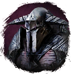
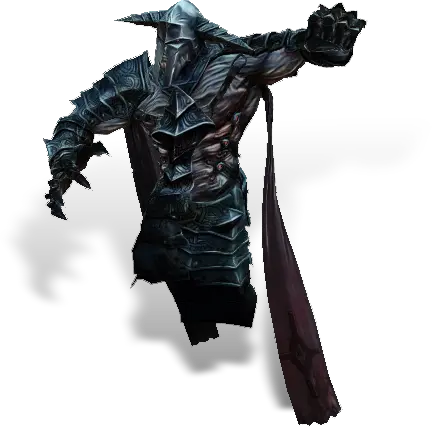

Открыть в интерактивной вики →

| Уровень | лёгк. 175 / норм. 175 / тяжел. 215 |
|---|---|
| Зоны атаки | , дальняя, ментальная |
| Шанс дропа 100% — уровни | лёгк. 1-125 / норм. 1-125 / тяжел. 140+ |
| Шанс дропа 90% — уровни | лёгк. 126+ / норм. 126+ / тяжел. -- |
| Шанс дропа 70% — уровни | -- |
| Группа боссов | Ужас |
| Сила (PvE) | норм. 19 056 / тяжел. 26 609 |
| Аспект арены | Farao |
| Здоровье | лёгк. 83 000 / норм. 83 000 / тяжел. 125 000 |
| Мана | 20 000 |
| Выносливость | 20 000 |
Локация
- Корабль Адмирала
- Адмиральский Мостик
Команда

Навыки


Дроп
 Глиф Подмастерья
Глиф Подмастерья 
 Путь ужаса
Путь ужаса 


 V-IX
V-IX  Гроссмейстерский глиф
Гроссмейстерский глиф  Даймонит 500
Даймонит 500 | Рары | Синергетики | Эпики | |||
 Рары Рары  Рары Рары  Рары Рары  Рары Рары  Рары Рары  Рары Рары | 80-100 ур. |  Эпики Эпики | |||
Прочее:  Путь ужаса Путь ужаса | |||||
Требования для входа

Путь по картам
Умения
- Буря — шаровая молния молния
- Аура чистоты — рассеивание теневая аура энергетическое шило удар в живот отупление булавка в глаз немота явление смерти укол куклы отравление
Иммунитеты / особые умения
Групповой разворот
Иммунитет к оглушению
Призыв: Уторский Ог
Устойчивость к рубящему урону
Устойчивость к дробящему урону